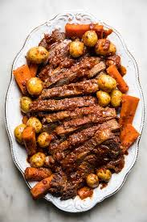

Jake's Braised Brisket

Description
A succulent, juicy, melt-in-your-mouth brisket braised with root vegetables and celery.
Ingredients
- 6 lbs Brisket (point preferred)
- 3 medium Yellow Onions (quartered)
- 3 medium Yellow Onions (sliced)
- 6 large Carrots (large dice)
- 1/2 head Celery (large dice)
- 1 lb small Youkon Gold Potatos
- 2 tbsp Garlic (chopped)
- 1 cup Red Wine
- 1 large can (16oz) Whole Peeled Tomatoes
- 1/2 cup Ketchup
- 4 sprigs Fresh Thyme
- 3 large Bay Leaves
- 1/2 cup Butter
- Salt to Taste
Instructions
- Preheat oven to 300 degrees F
- Brown brisket on all sides in Butter over medium-high heat
- Layer sliced Onions on bottom of large roasting pan
- Deglaze pan with Red Wine
- Place brisket on bed of Onions
- Combine all other ingredients and spread around brisket in roasting pan
- Braise in oven @ 300 degrees F for 4-6 hours until probe tender
- Let rest 30min, slice, and place back in braising juices to serve
Home